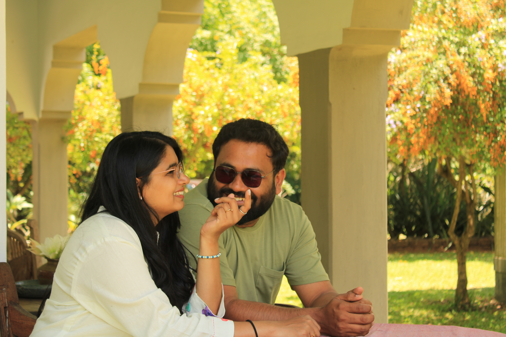
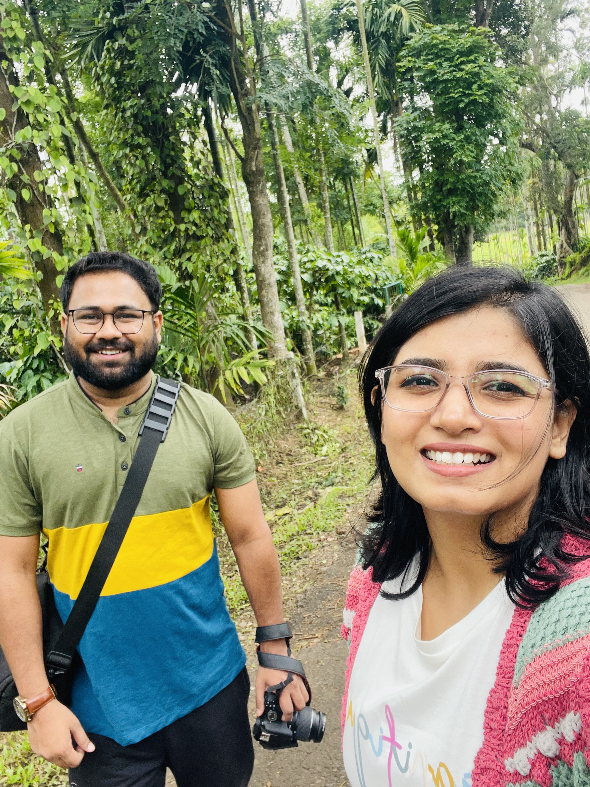

There is usually a moment when the next trip begins, and it rarely has anything to do with booking flights.
Sometimes it happens during a regular workday. A meeting ends, the laptop closes, and one of us casually asks, "Where should we go next?" Suddenly, we're checking calendars, looking at public holidays, counting leave days, and imagining places we've never been. Long before a ticket is booked, the journey has already started.
What makes our travels different is that they are built around a life that is already full.
We both have careers, responsibilities, deadlines, office days, and all the wonderfully ordinary things that fill our weeks. Travel isn't our lifestyle in the way social media often portrays it. We are not working from beach cafés or turning hotel rooms into temporary offices. When we travel, we want to be completely present. We want to wander down a street simply because it looks interesting, spend longer somewhere than planned, eat at a restaurant we've never heard of, and take the kind of detours that eventually become our favourite stories.
That means every trip has to fit around the life we've chosen, not replace it.
Looking back through our journeys, it's easy to see a collection of destinations. Different countries, landscapes, cultures, and experiences. But what stands out to us now isn't just where we went. It's what those experiences taught us.
A trip reminds you how much there is still to learn. A long train ride teaches you that the journey can be just as memorable as the destination. A hike rewards patience. Getting lost in an unfamiliar place teaches adaptability. Meeting people from different backgrounds reminds you how connected the world really is.
Every journey leaves something behind.
"And perhaps that's why travel doesn't start when we board a flight. For us, it starts the moment we decide we want to go somewhere."
What follows is often just as exciting as the trip itself. There are hours spent researching destinations, saving articles we'll probably never revisit, diving into endless Reddit rabbit holes, comparing routes, reading travel blogs, watching videos, and imagining what a place might feel like before we've even booked a ticket.
Then come the practical conversations. Does the timing work? Can we align our leave? What will the weather be like? Is this the right season to visit? Does this route make more sense than that one?
Slowly, an idea begins to take shape.
By the time we finally book the flights, we've often spent weeks, sometimes months, dreaming about the journey. The anticipation, the planning, the excitement, the debates, and all those conversations become part of the experience too. In many ways, they are every bit as memorable as the trip itself.
Thinking about it now, Routes & Reflections was born from these moments. Not just from the places we've visited, but from everything that surrounds a journey: the curiosity that sparks it, the planning that shapes it, the unexpected experiences along the way, the photographs we bring home, and the memories that stay with us long after we return. Every story on this site begins long before the trip itself and continues long after the bags are unpacked.
"The life between the trips matters just as much."
The morning coffee before work. The projects that challenge us. The conversations with friends and family. The routines that keep us grounded. The ordinary moments that rarely make it into photographs but quietly form the foundation of everything else.


The quiet moments between destinations, rarely photographed but often remembered.
Without them, travel would simply be movement. With them, travel becomes meaningful. We don't travel because we're trying to escape our lives. We travel because we genuinely enjoy the life we're building together. The journeys are not interruptions to that life. They're chapters within it.
And somewhere between the deadlines, the routines, the responsibilities, and the excitement of planning the next adventure, another story begins to take shape.
A story that reminds us that the best journeys are never just about the places we visit. They're about the people we become along the way, the memories we carry home, and the life waiting for us when we return.
We don't travel to escape our lives. We travel because we love the life we're building, and every now and then, we choose to add another chapter to the story.